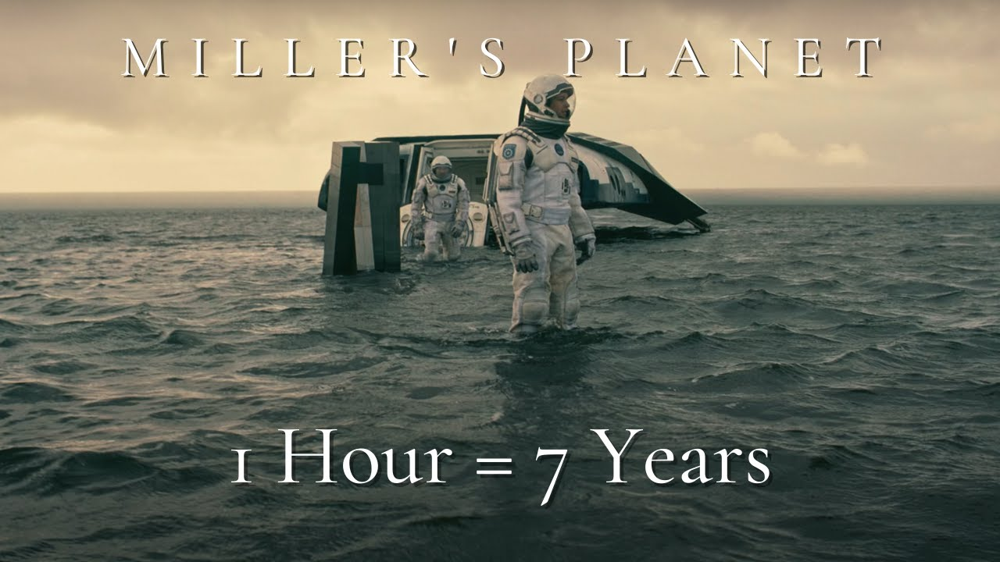

Time dilation happens because time moves slower for things that are moving fast or are in stronger gravity. This means that someone on a spaceship going close to the speed of light will experience time slower than someone on Earth. So, if the person on the spaceship goes on a long journey and comes back, they will have aged less than the person on Earth. This might sound strange, but it’s been proven by scientists and is a real part of how the universe works. If I were to leave for 25 years on a space ship and come back years later, I would be the same age but my friends and family would all have aged 25 years. Cool isnt it!
The theory of relativity is a fundamental theory in physics that explains the behavior of objects in motion, particularly at high speeds or in strong gravitational fields. The theory was developed by Albert Einstein in the early 1900s, and it consists of two main components: the theory of special relativity and the theory of general relativity.
The theory of special relativity deals with the behavior of objects moving at a constant speed in a straight line. It proposes that the laws of physics are the same for all observers, regardless of their relative motion. This means that if two people are moving at different speeds, they will still measure the same speed of light, and the laws of physics will still hold true for both of them.
The theory of general relativity, on the other hand, deals with the behavior of objects in the presence of gravity. It proposes that gravity is not a force, but rather a curvature of space-time caused by the presence of massive objects. This means that objects with mass will curve the fabric of space-time, and other objects will be affected by this curvature and experience gravity.
In the very famous movie Interstellar, time dilation is shown when the crew of the spacecraft, Endurance, orbiting the black hole, Gargantua, experiences time at a different rate than those on Earth. Due to the intense gravitational forces near the black hole, time appears to slow down for the crew relative to the people on Earth. For example, one hour on Millers planet near Gargantua is equivalent to seven years on Earth. As a result, the crew’s mission to explore different planets and find a new home for humanity takes much longer than expected from their perspective, but the people on Earth have aged decades by the time they return. The movie uses stunning visuals and special effects to depict the effects of time dilation, highlighting the concept’s significance in space exploration and the theory of relativity.
 Top Of The Page